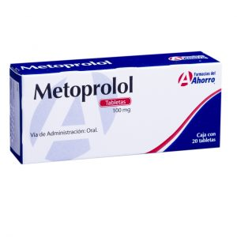
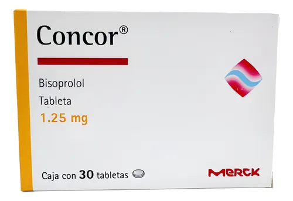

Inhiben selectivamente los receptores β1 cardíacos → ↓ FC, ↓ contractilidad, ↓ demanda de O₂
Atenolol y Metoprolol son preferidos en pacientes con enfermedades respiratorias leves debido a su selectividad β1, pero deben usarse con precaución.
HTA - Angina - IC crónica estable - Arritmias supraventriculares - IAM
Bradicardia severa - Bloqueo AV 2° o 3° - IC descompensada - Asma (uso con precaución)
Metoprolol: 50-100 mg BID(dos veces al día)
Atenolol: 50-100 mg QD(una vez al día)
Bisoprolol: 5-10 mg QD (una vez al día)
Fatiga - Bradicardia - Mareo Disfunción eréctil - Frío en extremidades